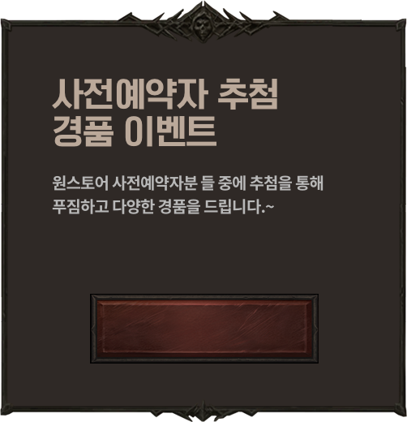
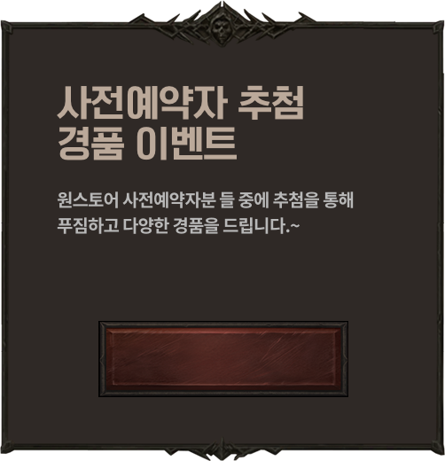

광란과 파괴의 군주,
해골왕이 돌아오다.
한때는 성군 레오릭 왕으로 불렸던 해골 왕은 디아블로 이모탈에서도 필멸자들을 맞이한다. (여러 의미에서) 절대 죽지 않는 언데드인 그를<미친 왕의 틈>에서 만났다. 새로운 전투를 준비하는 그의 잔혹함은, 너무 오래 전에 뻥 뚫려 공허함마저 느껴지지 않는 차디찬 얼굴에서부터 느낄 수 있었다.
한때는 성군 레오릭 왕으로 불렸던 해골 왕은 디아블로 이모탈에서도 필멸자들을 맞이한다. (여러 의미에서) 절대 죽지 않는 언데드인 그를<미친 왕의 틈>에서 만났다. 새로운 전투를 준비하는 그의 잔혹함은, 너무 오래 전에 뻥 뚫려 공허함마저 느껴지지 않는 차디찬 얼굴에서부터 느낄 수 있었다.

 
